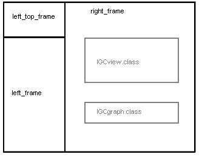

These notes are intended for developers and web designers who might want to modify the IGCview program.
IGCview was originally written as a java application running in its own window, but has now been converted to a java applet running within the browser, e.g. Internet Explorer or Netscape. This means you no longer have to download the java runtime environment as you used to with earlier versions, but can simply launch IGCview.html from your browser.
Another benefit of the applet design is that much of the user interface is now written in the HTML wrapped around the applet, rather than having menus and buttons within the applet window itself. This means you can change the look-and-feel of IGCview without modifying and re-compiling the core graphics code. For example, this means a different language version can be created simply by editing the HTML files.
IGCview can be run locally from a directory on your PC, or can be run from a web server. However, the file handling is currently implemented for local files only, so web execution is pretty useless. However... I intend to modify the applet to run well from the web.
So, you can imagine the strategic development for IGCview to be as follows:
When we get to step 4, a competition site could provide online maggot racing of the previous days task, with all the logs and the applet running from the web server.
At step 5, they can provide online maggot-racing in real-time.
The main page of IGCview.html is divided into multiple frames:
The many buttons are arranged around the applets, with each HTML button having a 'onClick' method which either calls a method within the IGCview.class or IGCgraph.class applets, or loads another HTML page containing more buttons into one of the frames.
The buttons and their functions are defined below, and it is important to understand that the buttons can be redesigned and moved around in the user interface, without affecting the functionality of the application at all. In fact, for much of the development time, I had the buttons defined as simple links in an HTML 'unordered list' and it was only at a late stage that I created the current graphical buttons. In due course perhaps someone will create a better look-and-feel than the current one.
The essential function necessary for the proper control and communication between a web page and its embedded applets are:
The good news is that these things are possible in a consistent way with both IE and netscape. Microsoft and Netscape provide broader capabilities in incompatible ways, but the above functions provide a powerful basis for a complete application to exploit the features of HTML, Java, and Javascript.
Firstly, embed the applet in your page and give it a Name attribute:
Let's assume you have a method 'showDate(String)' in your applet. This method must be
declared public, as in
Then, within your javascript code, simply call
I recommend that you limit the parameters and return values to strings and ints, to avoid potentially complex type conversion issues.
Netscape does not currently support variable case letters in the NAME property of the APPLET tag, so be careful to use all lowercase. In the example above note that I have used the name "myapplet" even though the code is in a file called "MyApplet.class".
Add MAYSCRIPT to the APPLET tag, as in
Import netscape.javascript.JSObject into your java program, as in
In summary, if you have IE installed, you extract JSObject.class from java40.jar into a file netscape/javascript/JSObject.class with the base directory being itself in a directory referred to in your environment variable CLASSPATH.
Note that you need JSObject to compile your java applet, but the subsequent execution of that applet is supported on IE or Netscape browsers without an additional download by the user.
Then in init set var JSObject a = getAppletContext
Set up args in Object[] a = { "xxx", "yyy" };
To call function call a.call("funcname", args);
Get a reference to the other applet:
Then a function in your partner applet can be called directly, for example:
If there is a potential concurrent consistency issue, then the execution thread in the partner applet can be stopped and started during the execution of the function call from this applet with:
It may be better to design the partner applet to execute in a threadsafe manner aware of the possible interactions from this applet making the cross-applet call.
Also, in the applet receiving the cross-applet calls, it makes good sense to structure the intended public methods into a well documented api, so your applet becomes easily re-usable and also the application can be changed around without necessarily re-compiling that individual applet.
| Image | Function | Location |
|---|---|---|
|
load zoom.html into left_frame | right_frame.html |
| load replay.html into left_frame | right_frame.html | |
| load tools.html into left_frame | right_frame.html | |
| load help.html into left_frame | right_frame.html | |
| call applet Altitude graph function igcview.igc_setalt() | right_frame.html | |
| call applet Cruise graph function igcview.igc_setcruise() | right_frame.html | |
| call applet Climb graph function igcview.igc_setcp() | right_frame.html | |
| call applet Distance x-axis function igcview.igc_setdist() | right_frame.html | |
| call applet Time x-axis function igcview.igc_settime() | right_frame.html | |
| call applet Expand x-axis function igcview.igc_expand() | right_frame.html | |
| call applet Compress x-axis function igcview.igc_compress() | right_frame.html | |
| call applet function igcview.igc_zoom_in() | zoom.html | |
|
call applet function igcview.igc_zoom_out() | zoom.html |
| call applet igcview.igc_zoom_to_task() | zoom.html | |
| call applet igcview.igc_zoom_to_flight() | zoom.html | |
|
call applet igcview.igc_zoom_reset() | zoom.html |
| call applet igcview.igc_synchro_start() | replay.html | |
| call applet igcview.igc_realtime_start() | replay.html | |
| call applet igcview.igc_race_forwards() | replay.html | |
| call applet igcview.igc_race_backwards() | replay.html | |
| call applet igcview.igc_race_pause() | replay.html | |
| call applet igcview.igc_race_stop() | replay.html | |
| call applet igcview.igc_ruler() (currently igc_ruler_zoom()) | tools.html | |
| call applet igcview.igc_zoom() (currently igc_ruler_zoom()) | tools.html | |
| call applet igcview.igc_define_task() | tools.html | |
|
call applet igcview.igc_set_wind() | tools.html |
| call applet igcview.igc_flight_data() | tools.html | |
| call applet igcview.igc_tp_detail() | tools.html | |
| call applet igcview.igc_scoring_data() | tools.html | |
| call applet igcview.igc_preferences() | tools.html | |
| call applet igcview.igc_select_tracks() | tools.html | |
| call applet igcview.igc_clear_tracks() | tools.html |
This section describes the functions available in the IGCview and IGCgraph applets that can be called from the surrounding HTML to provide the complete application functionality.
For example, to get the main map frame to zoom out, call
document.igcview.igc_zoom_out() from your HTML or JavaScript. Note that you may
need to add the frame name if the call is in another frame, e.g.
right_frame.document.igcview.igc_zoom_out().
| Function name | Functionality |
|---|---|
| IGCview.igc_file_open(string) | Open log file with name 'string' |